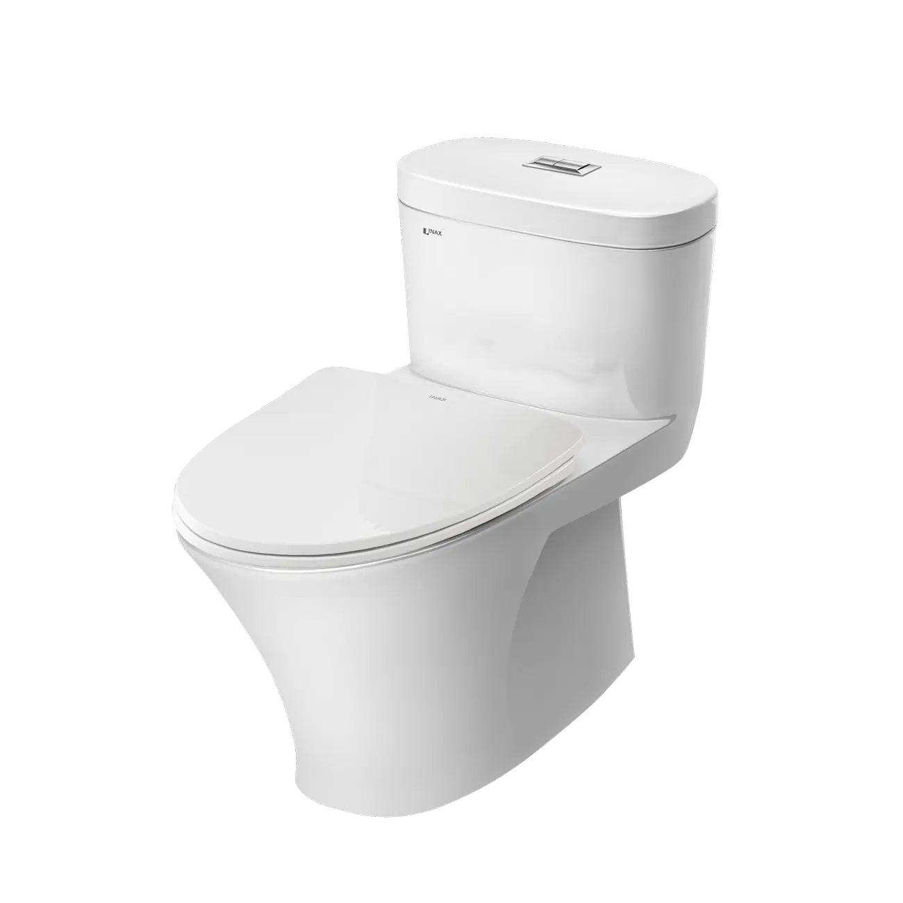
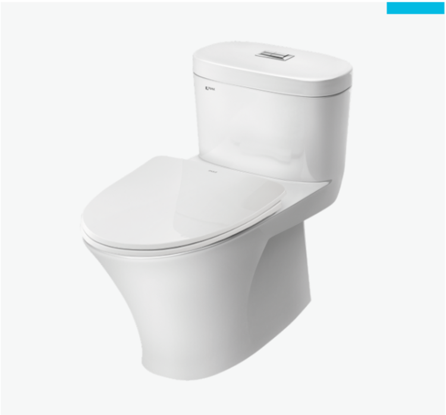
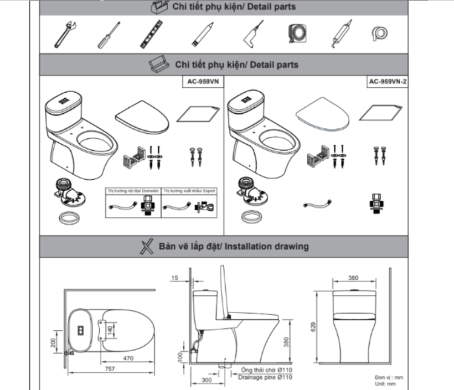

Bồn cầu AC-959VAN-2 là một trong những sản phẩm thông dụng của INAX, nổi bật với thiết kế 1 khối liền mạch và chắc chắn, gam màu trắng tinh tế và những đường cong mềm mại. Bồn cầu được làm từ sứ với chất lượng tốt, đảm bảo an toàn và độ bền bỉ theo thời gian, được rất nhiều khách hàng tin tưởng và lựa chọn.Với kích thước 760 x 380 x 629 (mm), sản phẩm có thể dễ dàng lắp đặt và phù hợp với nhiều diện tích nhà tắm khác nhau. Bồn cầu 1 khối AC-959VAN-2 đáp ứng tốt mọi nhu cầu sử dụng cơ bản hằng ngày, đồng thời mang lại trải nghiệm thoải mái và tiện lợi cho người dùng với mức giá hợp lý.Thiết kế bồn cầu 1 khối AC-959VAN-2 thông minhPhần két nước và bệ ngồi được nối liền thành một khối, giúp hạn chế khe hở, nhờ đó dễ dàng vệ sinh và hạn chế tích tụ bụi bẩn.Sử dụng nắp CF-600VS đóng mở êm ái, không gây tiếng ồn và hạn chế va đập mạnh gây bể vỡ bề mặt sứ.Nắp ngồi mỏng giúp bồn cầu trông thanh thoát và hiện đại hơn.Đặc điểm nổi bật của bồn cầu 1 khối AC-959VAN-2Công nghệ men sứ Aqua Ceramic: Bồn cầu sử dụng công nghệ độc quyền của INAX, có tác dụng chống bám bẩn và duy trì bề mặt sáng bóng lâu dài. Việc vệ sinh bồn cầu cũng trở nên đơn giản hơn mà không cần sử dụng đến các hóa chất tẩy rửa mạnh.Kỹ thuật xả rửa vành Rim: dòng nước phân bổ toàn bộ bề mặt bên trong bồn cầu, giúp cuốn trôi chất bẩn hiệu quả hơn và hạn chế điểm bám cặn. Nhờ vậy, bồn cầu luôn sạch sẽ, giảm mùi hôi và tiết kiệm thời gian vệ sinh.Hệ thống xả siphon: Cơ chế xả xoáy mạnh mẽ với 2 mức xả 6.5L (xả đại) và 4.3L (xả tiểu), tạo lực hút xoáy cuốn sạch nhanh chóng, không gây tiếng ồn. Đồng thời, tích hợp hai chế độ xả cho phép điều chỉnh lượng nước phù hợp với từng nhu cầu, giúp tiết kiệm nước, từ đó giảm thiểu chi phí sinh hoạt.Video giới thiệu công nghệ Aqua Ceramic độc quyền của INAXBồn cầu 1 khối INAX có thể kết hợp với chậu rửa bán âm INAX mã AL-333V, lavabo âm bàn mã AL-2216V và chậu rửa treo tường INAX mã L-285V để tạo nên một bộ sản phẩm đồng nhất về kiểu dáng, chất liệu nhằm tăng tính thẩm mỹ cho không gian phòng tắm của bạn. Việc kết hợp các sản phẩm đồng bộ không những giúp định hình phong cách nhà tắm mà còn tiết kiệm thời gian trong việc tìm kiếm các sản phẩm phù hợp.Bản vẽ bồn cầu 1 khối AC-959VAN-2Bản vẽ bồn cầu 1 khối AC-959VAN-2Hướng dẫn lắp đặt bồn cầu 1 khối AC-959VAN-2Xem Hướng dẫn lắp đặt sản phẩm tại đây.Thông số kỹ thuậtChất liệuSứKiểu dáng1 khối liền mạchKích thước760 x 380 x 629 (mm) (Dài x Rộng x Cao)Tính năng & Công nghệ- Công nghệ men sứ Aqua Ceramic: Chống bám bẩn, giữ bề mặt sản phẩm sáng bóng lâu dài - Hệ thống xả siphon với hai mức xả 6.5L/ 4.3L (xả đại/ xả tiểu) giúp tiết kiệm và sử dụng nước hiệu quả hơn - Kỹ thuật xả rửa vành Rim cuốn trôi chất bẩn hiệu quả, giảm thiểu mùi hôi - Chống bám cặn, chống bám bẩn, độ bền cao, xả sạch và dễ dàng vệ sinhThương hiệuINAXThiết kế- Thiết kế két nước bồn cầu liền khối với bệ ngồi, hạn chế khe hở và dễ vệ sinh - Nắp đóng êm, hạn chế tiếng ồn và giảm nguy cơ va đập mạnh - Nắp ngồi mỏng, đường nét thanh thoát, tạo vẻ sang trọng và hiện đại cho bồn cầu - Phù hợp nhà tắm có diện tích nhỏ với phong cách đơn giảnMàu sắcTrắngKhác- Gợi ý sản phẩm đi kèm: chậu rửa bán âm INAX AL-333V, chậu rửa đặt bàn INAX AL-2216V, chậu rửa treo tường INAX L-285V - Miễn phí hỗ trợ và tư vấn về sản phẩm, dịch vụ INAX - Hotline tư vấn và bảo hành: 18006633
Bồn cầu 1 khối AC-959VAN-2
Bàn cầu thương hiệu INAX.
Đã cập nhật danh sách yêu thích.
DANH MỤC: Bàn cầu
MÃ SẢN PHẨM: AC-959VAN-2
DEPTH: 760mm
HEIGHT: 636mm
WIDTH: 380mm
Bồn cầu AC-959VAN-2 là một trong những sản phẩm thông dụng của INAX, nổi bật với thiết kế 1 khối liền mạch và chắc chắn, gam màu trắng tinh tế và những đường cong mềm mại. Bồn cầu được làm từ sứ với chất lượng tốt, đảm bảo an toàn và độ bền bỉ theo thời gian, được rất nhiều khách hàng tin tưởng và lựa chọn.Với kích thước 760 x 380 x 629 (mm), sản phẩm có thể dễ dàng lắp đặt và phù hợp với nhiều diện tích nhà tắm khác nhau. Bồn cầu 1 khối AC-959VAN-2 đáp ứng tốt mọi nhu cầu sử dụng cơ bản hằng ngày, đồng thời mang lại trải nghiệm thoải mái và tiện lợi cho người dùng với mức giá hợp lý.Thiết kế bồn cầu 1 khối AC-959VAN-2 thông minhPhần két nước và bệ ngồi được nối liền thành một khối, giúp hạn chế khe hở, nhờ đó dễ dàng vệ sinh và hạn chế tích tụ bụi bẩn.Sử dụng nắp CF-600VS đóng mở êm ái, không gây tiếng ồn và hạn chế va đập mạnh gây bể vỡ bề mặt sứ.Nắp ngồi mỏng giúp bồn cầu trông thanh thoát và hiện đại hơn.Đặc điểm nổi bật của bồn cầu 1 khối AC-959VAN-2Công nghệ men sứ Aqua Ceramic: Bồn cầu sử dụng công nghệ độc quyền của INAX, có tác dụng chống bám bẩn và duy trì bề mặt sáng bóng lâu dài. Việc vệ sinh bồn cầu cũng trở nên đơn giản hơn mà không cần sử dụng đến các hóa chất tẩy rửa mạnh.Kỹ thuật xả rửa vành Rim: dòng nước phân bổ toàn bộ bề mặt bên trong bồn cầu, giúp cuốn trôi chất bẩn hiệu quả hơn và hạn chế điểm bám cặn. Nhờ vậy, bồn cầu luôn sạch sẽ, giảm mùi hôi và tiết kiệm thời gian vệ sinh.Hệ thống xả siphon: Cơ chế xả xoáy mạnh mẽ với 2 mức xả 6.5L (xả đại) và 4.3L (xả tiểu), tạo lực hút xoáy cuốn sạch nhanh chóng, không gây tiếng ồn. Đồng thời, tích hợp hai chế độ xả cho phép điều chỉnh lượng nước phù hợp với từng nhu cầu, giúp tiết kiệm nước, từ đó giảm thiểu chi phí sinh hoạt.Video giới thiệu công nghệ Aqua Ceramic độc quyền của INAXBồn cầu 1 khối INAX có thể kết hợp với chậu rửa bán âm INAX mã AL-333V, lavabo âm bàn mã AL-2216V và chậu rửa treo tường INAX mã L-285V để tạo nên một bộ sản phẩm đồng nhất về kiểu dáng, chất liệu nhằm tăng tính thẩm mỹ cho không gian phòng tắm của bạn. Việc kết hợp các sản phẩm đồng bộ không những giúp định hình phong cách nhà tắm mà còn tiết kiệm thời gian trong việc tìm kiếm các sản phẩm phù hợp.Bản vẽ bồn cầu 1 khối AC-959VAN-2Bản vẽ bồn cầu 1 khối AC-959VAN-2Hướng dẫn lắp đặt bồn cầu 1 khối AC-959VAN-2Xem Hướng dẫn lắp đặt sản phẩm tại đây.Thông số kỹ thuậtChất liệuSứKiểu dáng1 khối liền mạchKích thước760 x 380 x 629 (mm) (Dài x Rộng x Cao)Tính năng & Công nghệ- Công nghệ men sứ Aqua Ceramic: Chống bám bẩn, giữ bề mặt sản phẩm sáng bóng lâu dài - Hệ thống xả siphon với hai mức xả 6.5L/ 4.3L (xả đại/ xả tiểu) giúp tiết kiệm và sử dụng nước hiệu quả hơn - Kỹ thuật xả rửa vành Rim cuốn trôi chất bẩn hiệu quả, giảm thiểu mùi hôi - Chống bám cặn, chống bám bẩn, độ bền cao, xả sạch và dễ dàng vệ sinhThương hiệuINAXThiết kế- Thiết kế két nước bồn cầu liền khối với bệ ngồi, hạn chế khe hở và dễ vệ sinh - Nắp đóng êm, hạn chế tiếng ồn và giảm nguy cơ va đập mạnh - Nắp ngồi mỏng, đường nét thanh thoát, tạo vẻ sang trọng và hiện đại cho bồn cầu - Phù hợp nhà tắm có diện tích nhỏ với phong cách đơn giảnMàu sắcTrắngKhác- Gợi ý sản phẩm đi kèm: chậu rửa bán âm INAX AL-333V, chậu rửa đặt bàn INAX AL-2216V, chậu rửa treo tường INAX L-285V - Miễn phí hỗ trợ và tư vấn về sản phẩm, dịch vụ INAX - Hotline tư vấn và bảo hành: 18006633
DANH MỤC: Bàn cầu
MÃ SẢN PHẨM: AC-959VAN-2
DEPTH: 760mm
HEIGHT: 636mm
WIDTH: 380mm